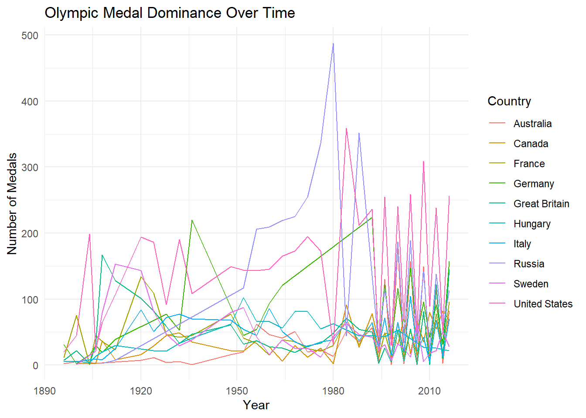
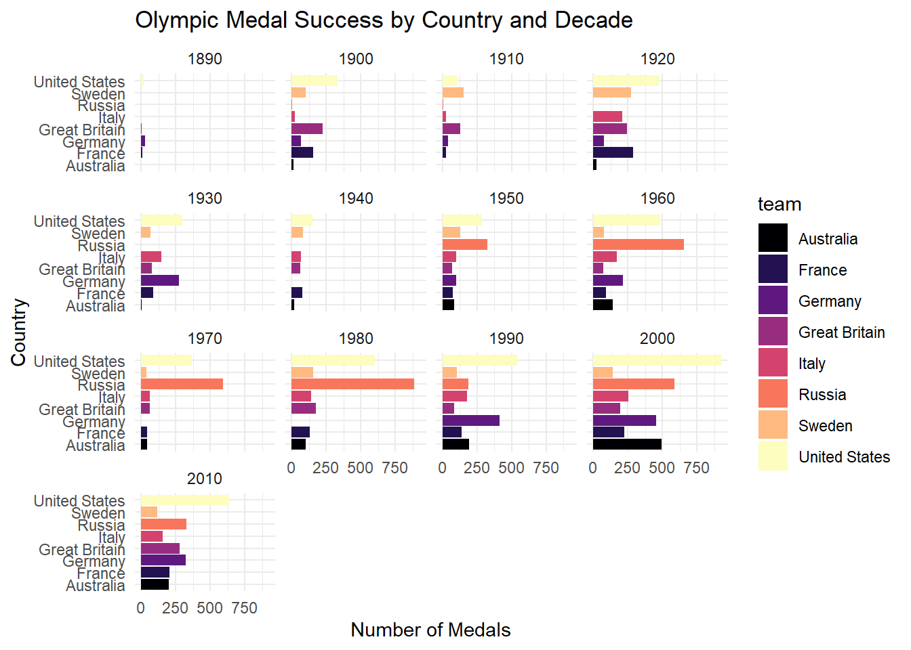
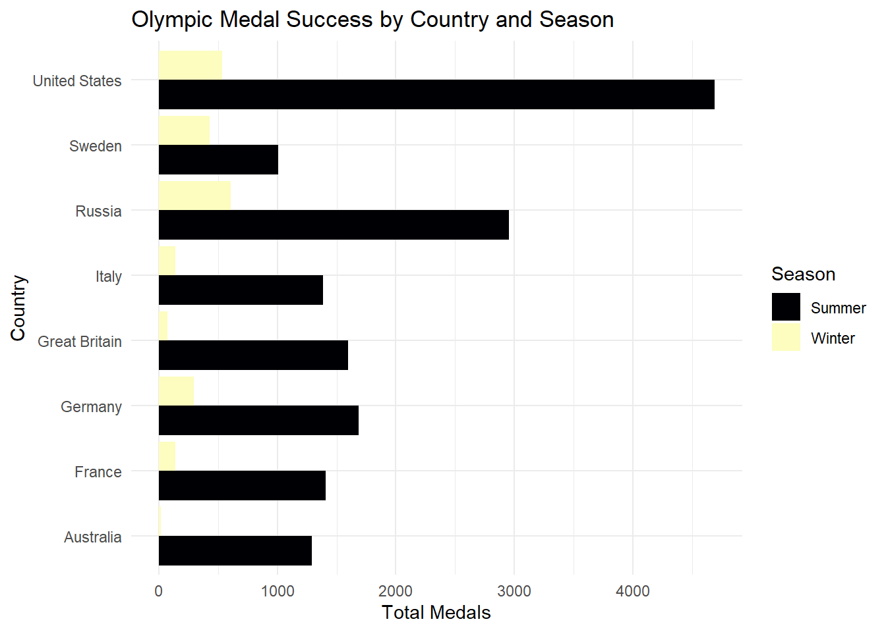

library(tidyverse)
library(ggplot2)
library(readr)
library(readr)
library(stringr)
library(lubridate)
library(dplyr)
library(forcats)olympics <- readr::read_csv('https://raw.githubusercontent.com/rfordatascience/tidytuesday/main/data/2024/2024-08-06/olympics.csv')Rows: 271116 Columns: 15
── Column specification ────────────────────────────────────────────────────────
Delimiter: ","
chr (10): name, sex, team, noc, games, season, city, sport, event, medal
dbl (5): id, age, height, weight, year
ℹ Use `spec()` to retrieve the full column specification for this data.
ℹ Specify the column types or set `show_col_types = FALSE` to quiet this message.Introduction: This analysis uses the “120 Years of Olympic History: Athletes and Results” dataset from Kaggle by RGriffin. The dataset contains historical information about Olympic athletes which includes basic biological data and medal results. It covers the Olympic Games from 1896 to 2016. Each observation represents a medal won by an athlete in a specific Olympic event and year.
For this analysis, I focused on Olympic medal trends by country from 1896 to 2016. After following past olympic games, I became even more interested in how different countries have dominated the medal counts over time. I used this dataset to explore which countries have been most successful, how medal success has shifted across decade and how Summer and Winter games compare in terms of country.
The main variables used are:
team: The country the athlete competed for
season: Whether the Games were Winter or Summer
year: The year of the Olympic Games
medal: Medal(Bronze, Silver, Gold)
Question of Interest: How has Olympic medal dominance by country changed over time?
The data originates from Sports Reference and was compiled into a dataset by RGriffin on Kaggle. It was accessed via the TidyTuesday project: https://github.com/rfordatascience/tidytuesday/blob/main/data/2024/2024-08-06/readme.md
Graph#1 First, I investigated which countries dominate Olympic medals over time. I created a line chart showing the number of medals won by the top 10 countries across Olympic years from 1896 to 2016. To keep country names consistent, I used mutate to combine the Soviet Union with Russia so their medals would be counted together. This graph allowed me to visualize how medal success for the top countries has changed over time.
Which countries dominate Olympic medals over time?
medals <- olympics |>
filter(!is.na(medal))|>
mutate(team = ifelse(team == "Soviet Union", "Russia", team))
country_totals <- medals |>
group_by(team) |>
summarise(total_medals = n())
top_countries <- country_totals |>
arrange(desc(total_medals)) |>
slice(1:10)
top_medals <- medals |>
filter(team == "United States" |
team == "Germany" |
team == "Russia" |
team == "Great Britain" |
team == "France" |
team == "Italy" |
team == "Sweden" |
team == "Canada" |
team == "Australia" |
team == "Hungary")
medals_year_country <- top_medals |>
group_by(year, team) |>
summarise(medals = n())`summarise()` has grouped output by 'year'. You can override using the
`.groups` argument.ggplot(medals_year_country, aes(x = year, y = medals, colour = team)) +
geom_line()+
labs(
title = "Olympic Medal Dominance Over Time",
x = "Year",
y = "Number of Medals",
colour = "Country"
) +
theme_minimal()
We can see that medal counts for countries change a lot over time. Russia shows a very large spike around the 1980 Olympics where they won far more medals than other countries. The United States looks more consistent across the years as they have been winning similar amounts of medals in most olympics. From around 2000 onward, they also appear to lead in total medals compared to the other top countries.
Since the graph includes data from 1896 to 2016, the results may be affected by historical events and changes in the Olympics over time.
To look at this more closely, the next step is to examine how medal success changes by country across different decades.
How has medal success for the top 8 countries changed across different Olympic decades?
medals_2 <- olympics |>
filter(!is.na(medal))|>
mutate(team = ifelse(team == "Soviet Union", "Russia", team))
country_totals_2 <- medals_2 |>
group_by(team) |>
summarise(total_medals = n())
top_countries_2 <- country_totals_2 |>
arrange(desc(total_medals)) |>
slice(1:8)
top_medals_2 <- medals_2 |>
filter(team == "United States" |
team == "Germany" |
team == "Russia" |
team == "Great Britain" |
team == "France" |
team == "Italy" |
team == "Sweden" |
team == "Australia")
medals_decade <- top_medals_2 |>
mutate(decade = floor(year / 10) * 10)
decade_medals <- medals_decade |>
group_by(decade, team) |>
summarise(medals = n())`summarise()` has grouped output by 'decade'. You can override using the
`.groups` argument.ggplot(data=decade_medals, aes(x = team, y = medals, fill=team)) +
geom_col() +
facet_wrap(~decade)+
coord_flip()+
scale_fill_viridis_d(option="A")+
labs(
title = "Olympic Medal Success by Country and Decade",
x = "Country",
y = "Number of Medals"
) +
theme_minimal()
We can see that medal success changes across different Olympic decades. Russia had the highest total medal counts from the 1950s through the 1980s while the United States began to lead highest medal totals from the 1990s through the 2010s.
To round the year down to the nearest decade I used “floor” within the mutate() function. This allowed the data to be grouped and compared more easily across different Olympic decades.
Next, I examined how Olympic medal success differs between the Summer and Winter Games for the top countries.
How does Olympic medal success differ between the Summer and Winter Games for the top countries?
medals_season_country <- top_medals_2 |>
group_by(team, season) |>
summarise(medals = n())`summarise()` has grouped output by 'team'. You can override using the
`.groups` argument.ggplot(data = medals_season_country, aes(x = team, y = medals, fill = season)) +
geom_col(position = "dodge") +
coord_flip() +
scale_fill_viridis_d(option="A")+
labs(
title = "Olympic Medal Success by Country and Season",
x = "Country",
y = "Total Medals",
fill = "Season"
) +
theme_minimal()
We can see that medal success differs between the Summer and Winter Olympics for the top countries. The United states clearly leads in total Summer Olympic medals by a large margin. In the winter Olympics, Russia slightly leads the United States in total medals. However, it’s important to consider that Russia only began competing in the Olympics in the 1950s while the United states has been competing since the 1890s.
Conclusion: In this analysis, looking at Olympic medal trends helped show how medal dominance by country has changed from 1896 to 2016. The graphs show that Russia had strong dominance from 1950s through the 1980s. The results also show that the United States has a much higher number of Summer Olympic medals while Russia slightly leads in Winter Olympic medals among the top countries.
However, these results may be influenced by historical events and differences in when countries began competing in the Olympics. If I had more time, I could further explore how medal success differs by sport or look at how summer and Winter Olympic medal counts for the top countries change across different decades.
Connection to Class ideas: The visualizations are effective because they use a line plot and bar charts to clearly show patterns in Olympic medal success over time. The line plot shows how medal counts for top countries change across Olympic years which helps highlight trends and periods of dominance. However, with around 10 countries included, the line plot can be a little harder to read because many lines overlap. The bar charts help make the patterns clearer. The bar chart faceted by decade shows how medal success changes across different Olympic eras while the bar chart using postion =“dodge” makes it easy to compare Summer and winter Olympic medals for each country. Altogether, these graphs connect to class ideas about using different types of visualizations to better understand trends and differences in the data.